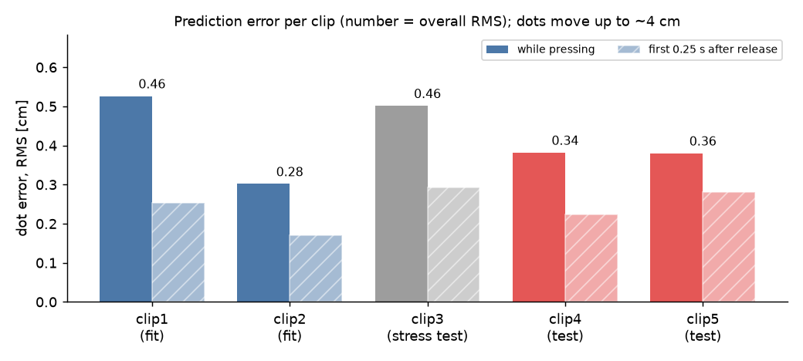
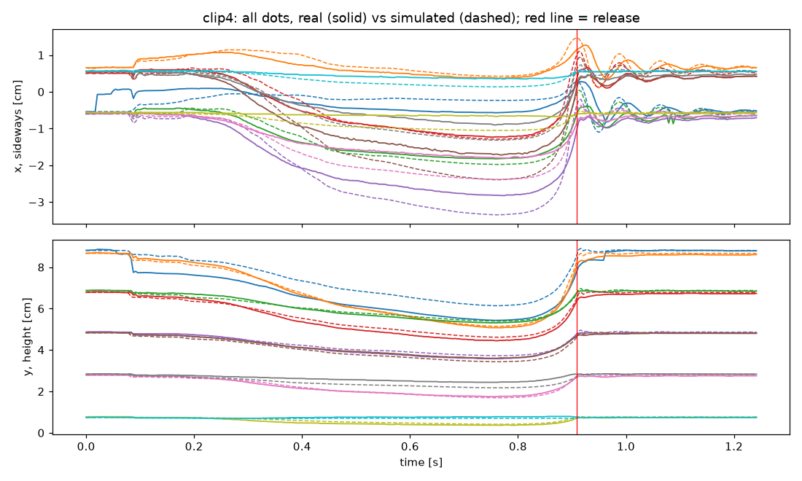
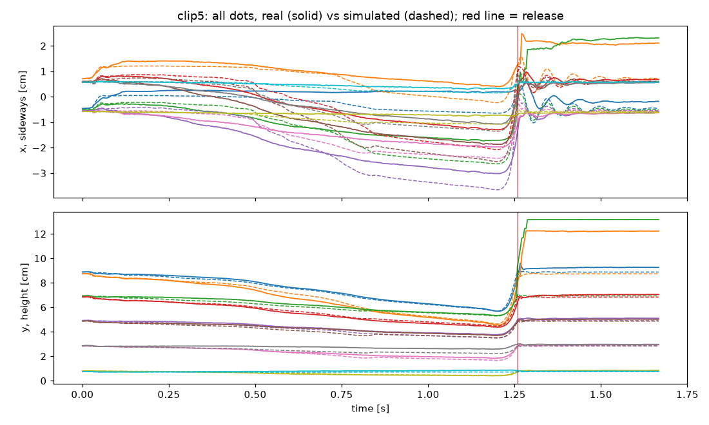
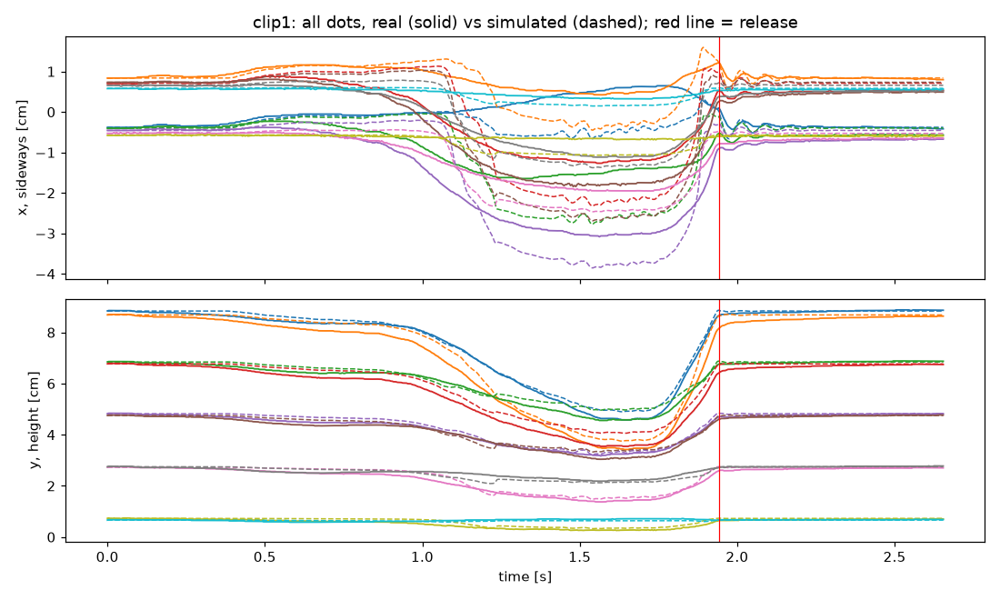
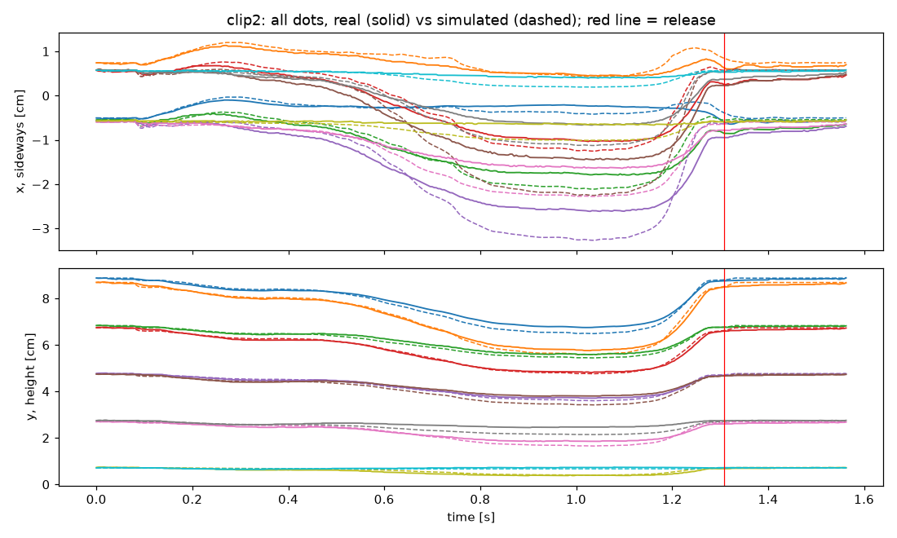
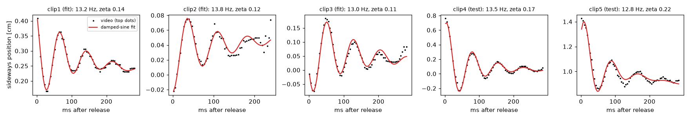
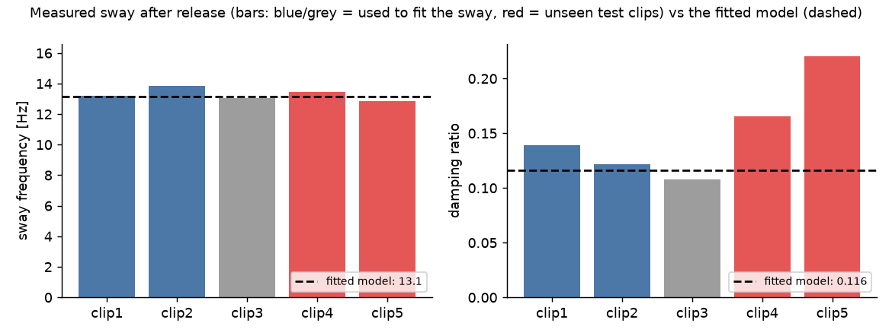
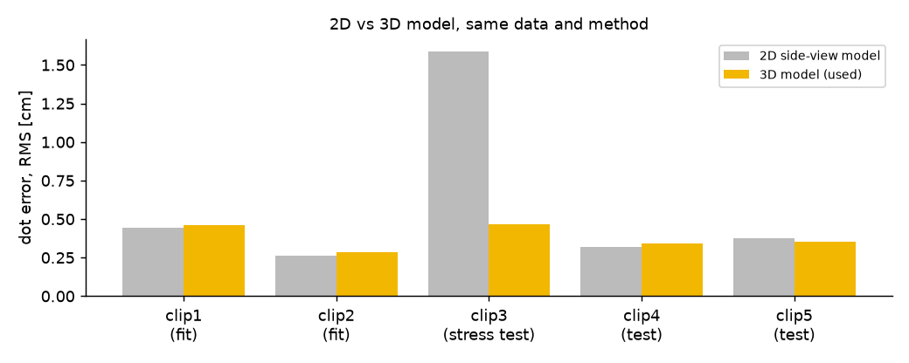
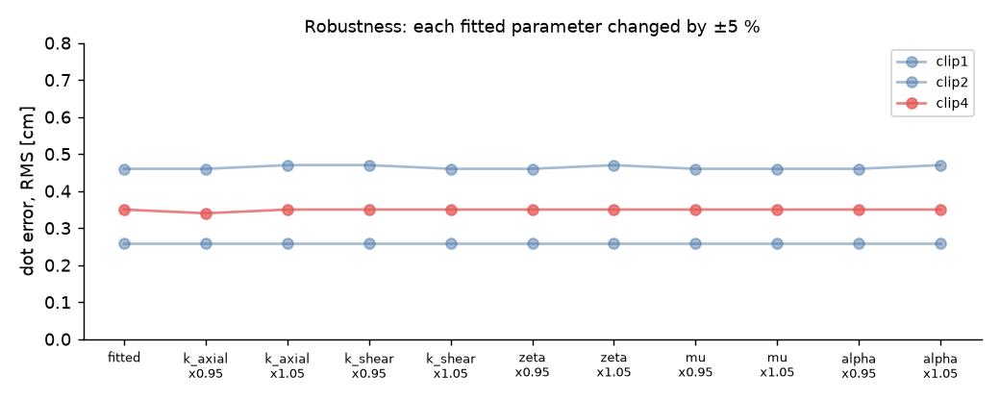

Demo videos
Each video (8× slow motion) shows, on the left, the real video with the model's front face drawn on top (blue mesh): orange circles are the real ink dots, blue crosses are where the model predicts them. On the right is the 3D model under the phone plate. The strip at the bottom plots the top dot's position over time, real (thick) vs simulated (thin).
Unseen test presses
Fitting clips
Interactive 3D viewer
Drag to rotate, scroll to zoom, scrub the time line, switch clips. Orange: real dots; blue: simulated dots; grey slab: the phone. Open full screen.
Results
RMS distance between simulated and tracked dots, over every frame of each clip. The simulation only receives the phone's tracked height, tilt and sideways motion, plus the sponge's shape in the frames before contact.

| Clip | Role | Overall | Pressing | After release | Measured sway |
|---|---|---|---|---|---|
| clip1 | fit | 0.46 cm | 0.53 | 0.25 | 13.2 Hz, ζ 0.14 |
| clip2 | fit | 0.28 cm | 0.30 | 0.17 | 13.8 Hz, ζ 0.12 |
| clip3 | stress test | 0.46 cm | 0.50 | 0.29 | 13.0 Hz, ζ 0.11 |
| clip4 | test | 0.34 cm | 0.38 | 0.22 | 13.5 Hz, ζ 0.17 |
| clip5 | test | 0.36 cm | 0.38 | 0.28 | 12.8 Hz, ζ 0.22 |
All dots over time




How the video sets stiffness and damping
The video gives positions, never forces. The cleanest dynamic signal is the sway right after the phone lets go: the top of the strip swings sideways a few times and settles. A damped sine fits it in every clip. Its frequency sets the stiffness (relative to mass) and its decay sets the damping. The model is tuned so that a virtual "pluck" sways the same way.


Comparisons


Method
- Capture. 5 presses filmed at 240 fps from the side, 10 ink dots on the sponge's visible face, sponge measured with a ruler (9.5 × 2 × 7.4 cm).
- Tracking (OpenCV). Dots found by local darkness and followed with optical flow; the phone's edge gives its height, tilt and sideways position; camera drift (up to 0.9 cm) is measured on the static base and removed.
- 3D model. 3 × 11 × 4 point masses joined by springs, with a volume-preserving term so cells cannot turn inside out, Rayleigh damping, the phone as a moving plate with friction, gravity, and the sponge's measured starting bow (which decides which way it buckles).
- Fit, stage A. Stiffness and damping chosen so the model sways like the video (13.1 Hz, damping ratio 0.12).
- Fit, stage B. Shear/axial stiffness ratio, friction and material damping fitted to the dot trajectories of clips 1–2.
- Test. Clips 4 and 5 predicted from the phone's motion alone and compared with the tracked dots.
Full details, assumptions, run instructions and credits are in the README. Everything is scripted and was re-run from a clean copy of the repository.
Limitations
- Stiffness is per unit mass. Video gives no forces, so stiffness and mass cannot be separated; weighing the sponge would give N/m.
- Linear, uniform foam; no self-contact; no slow creep. Folding onto itself (clip 3) and the slow creep back over seconds are outside the model.
- Damping varies between takes (0.11–0.22); one fitted value is an average.
- Small test set (2 unseen presses), and the parameters were fitted before camera-drift compensation was added (errors on the fitting clips barely changed, so the model was not refitted).